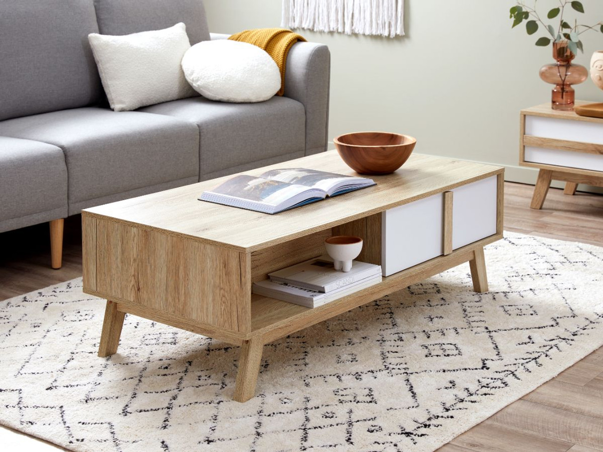

Side table: A side table is the most convenient surface option for keeping all the extra stuff in your house like the remotes, keys, intercoms and other easy to reach items. The most appealing feature of a side table is that it is compact, meaning it occupies less floor space. These are made from highly durable materials and are a perfect add on to any desired space in the house. An added advantage would be side table with storage here. Center table: The most decorative and aesthetic element of a large space would be the center table. These are elegant and are made to capture the entire persona of a living room or an outdoor space, wherever you desire to place it. They have high functionality and smart utility because they are large enough to allow you to accommodate more stuff on them and at the same time occupy minimal floor space. A modern center table would be a highly popular choice that can be used in a versatile manner across design avenues. Bedside table: These tiny pieces of wood are an ultimate savior for you with your lazy sleep-in mornings or late nights. The tables are very sleek and compact, made to coordinate with the look of your bed. They look very put together and at the same time allow you to place all your tiny belongings that might otherwise wander around in your room. The bedside table with drawer is usually a great option because of the extra storage space.
